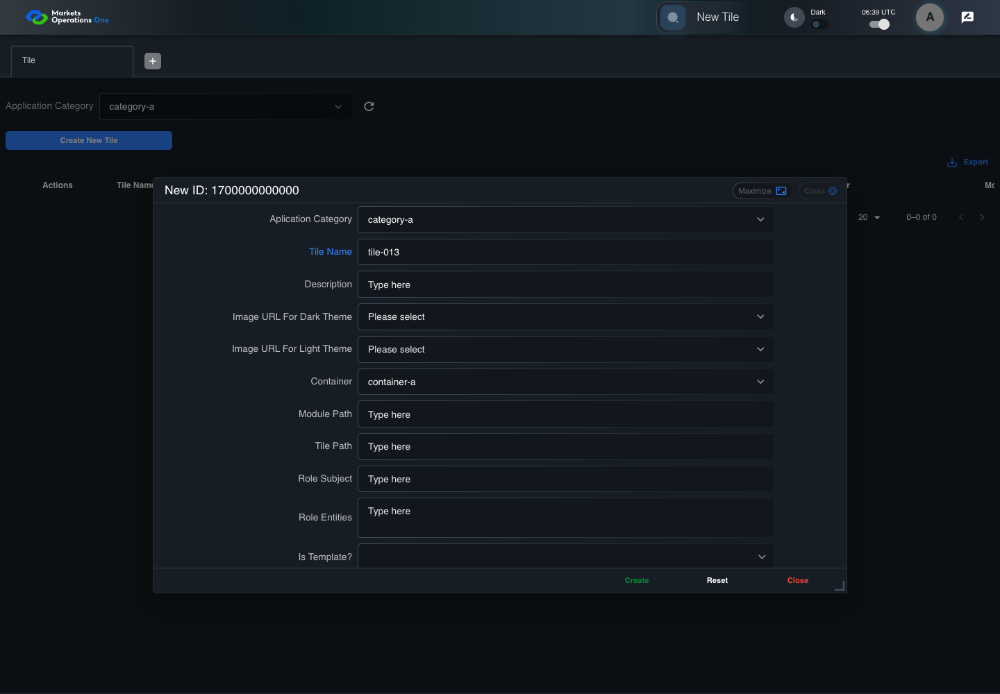

BFF-ADM-013 current BFF administration through actual UI
PASS · application/run-072/bff-adm-013-current-bff-administration-through-actual-ui-de0782aa4590-attempt-1 · ACTUAL_APPLICATION_LOCAL_SERVICES
Actual current React and exact-current BFF admin controllers/services/JPA with actual migration DDL in disposable PostgreSQL. Controlled OUD/EMS2 identities and local Spring bootstrap. Fixture SQL seeds/mutates isolated records; service errors are actual database errors. Undefined agreed messages remain unresolved acceptance.
2026-10-22T06:39:27.530Z to 2026-10-22T06:39:34.223Z
Assertions and result · Artifact manifest · Exact run inputs and source hashes
Result SHA-256:9ae860011fc79038be3f790bb3afa073b842eb9c1e7ad8c205624ce7973b0347Machine observations
- actual-identity-projection.json
40dbecbaf6105f4123562133f40209ca8c1ebd88635bf49ffd94bdd3686e36bb - baseline-inputs.json
aa22ab02b3a20be94e0b01826004b02bdc585dfc5d4070ad394caeedebcf153a - bff-boundary.json
64496bc61d5141c55932dfbe3698565ee03a4c958f5881bc6b5da280467bce89 - committed-ui-submission-comparisons.json
d2615d6b17a78ee6a9967d82387d7c6f0ad675b504f196f2b872a72753a0f821 - creation-clock.json
f7ec38b503bca4b5d285054012b51d9790d905fdb8eda10abbb2b531d97176fa - empty-filter-rule-representation.json
291760fe06f9db09c412d8af8f34dd1296b3dfe74495c2b0f3fe0b8168979935 - fixture-step-10.json
337e508df7cb3caa0e0eb73cfa37d725e92c122386a89b9c8cf58d9354a4a19b - fixture-step-11.json
e7403aa383b2703b6f96bac5da9438e7e2631d9e3fdbdb226b4f8cba9afb8964 - fixture-step-6.json
f0bab394b8b1424477e6b803d4b5fe2339c9db3dbf1362c9a3563b923bf723dd - fixture-step-7.json
a7732793b77626fdbb4d24b0f2e268a4dd4b9015129347363ce691b8ac6f7bca - fixture-step-8.json
c6fb702a416d749bf90c5aae377cb5962db06d7d699bf2192432a91bf91a0193 - fixture-step-9.json
05e0476fcc9278297b5d0b11a640fe49f869527636e9a44f3c62e352dd3ee5fe - initial-persisted-records.json
34ff19d6b34e87f040b0b152e0a6e54f5e9ae39b9bc568c882c487327280697b - persisted-after-submit.json
f550478c8f3aad76ad0c6ccfbff03adb614c81d1fb6ecea597e0c164888fb194 - reference-snapshot-3.json
bbe05094e3e879daeb023b43b7652148769e1ae8986a865ab1fe66f1d0d57253 - reference-snapshot-4.json
22f75fda9ab8e9747e1ba60827bc475941daca8e69231c0bf8ac8b744fc62682 - ui-origin-bff-requests.json
f993fbfae0f92522566f64f7c92e89827f348e82acda2278295aa04f59b9457b
Screenshot capture: CAPTURED. Named frames: 25.
Step screenshot evidence: COMPLETE. 24/24 canonical steps have execution screenshots.
Canonical step timeline
Given Admin A uses subject "admin-a" with role "FMO_ADMIN" in an isolated authenticated browser
Execution: PASSED.
1. step-01 Visible state after step 1: Given Admin A uses subject "admin-a" with role "FMO_ADMIN" in an isolated authenticated browser
2026-10-22T06:39:29.248Z · 1440×1000
Step: /Users/lushevol/code/github/ratan-release-impact/workbench/tasks/ui-test-coverage-20261022/test-cases.md:15166
SHA-256:eec5872632406774f1e3e79de8a07c7249836241108ba771cff133ac015434d3And the controlled Tile fixture records the initial grid rows and persisted values
Execution: PASSED.
2. step-02 Visible state after step 2: And the controlled Tile fixture records the initial grid rows and persisted values
2026-10-22T06:39:29.362Z · 1440×1000
Step: /Users/lushevol/code/github/ratan-release-impact/workbench/tasks/ui-test-coverage-20261022/test-cases.md:15167
SHA-256:8981f23155a955bd889f87b5d7fcafbd6ca0da538567d51a37c43a995c599cf8And Category 101 has label "category-a" and Import Map 201 has Module Name "container-a"
Execution: PASSED.
3. step-03 Visible state after step 3: And Category 101 has label "category-a" and Import Map 201 has Module Name "container-a"
2026-10-22T06:39:29.395Z · 1440×1000
Step: /Users/lushevol/code/github/ratan-release-impact/workbench/tasks/ui-test-coverage-20261022/test-cases.md:15168
SHA-256:6e45dc27b67ab3efb3d9280ff61fee72e58757001c21c3fadc1594e9b3f38f7aAnd both references belong to "FMO_ADMIN" and the Tile page category filter value is Category 101
Execution: PASSED.
4. step-04 Visible state after step 4: And both references belong to "FMO_ADMIN" and the Tile page category filter value is Category 101
2026-10-22T06:39:29.427Z · 1440×1000
Step: /Users/lushevol/code/github/ratan-release-impact/workbench/tasks/ui-test-coverage-20261022/test-cases.md:15169
SHA-256:6e45dc27b67ab3efb3d9280ff61fee72e58757001c21c3fadc1594e9b3f38f7aAnd the controlled creation clock returns 1700000000000 milliseconds
Execution: PASSED.
5. step-05 Visible state after step 5: And the controlled creation clock returns 1700000000000 milliseconds
2026-10-22T06:39:29.462Z · 1440×1000
Step: /Users/lushevol/code/github/ratan-release-impact/workbench/tasks/ui-test-coverage-20261022/test-cases.md:15170
SHA-256:165b3043054d4699293501830517c4b5a2d3fe02386c7a9246d7df39b9307ae6And the baseline fixture data defines "Tile Name" as "tile-013"
Execution: PASSED.
6. step-06 Visible state after step 6: And the baseline fixture data defines "Tile Name" as "tile-013"
2026-10-22T06:39:29.494Z · 1440×1000
Step: /Users/lushevol/code/github/ratan-release-impact/workbench/tasks/ui-test-coverage-20261022/test-cases.md:15171
SHA-256:165b3043054d4699293501830517c4b5a2d3fe02386c7a9246d7df39b9307ae6And the baseline fixture data defines "Module Path" as "/fixture"
Execution: PASSED.
7. step-07 Visible state after step 7: And the baseline fixture data defines "Module Path" as "/fixture"
2026-10-22T06:39:29.530Z · 1440×1000
Step: /Users/lushevol/code/github/ratan-release-impact/workbench/tasks/ui-test-coverage-20261022/test-cases.md:15172
SHA-256:883034f63985c6ca077afe7182752ff7401decbb7891dae8e3e80f61e8062601And the baseline fixture data defines "Tile Path" as "/case-013"
Execution: PASSED.
8. step-08 Visible state after step 8: And the baseline fixture data defines "Tile Path" as "/case-013"
2026-10-22T06:39:29.563Z · 1440×1000
Step: /Users/lushevol/code/github/ratan-release-impact/workbench/tasks/ui-test-coverage-20261022/test-cases.md:15173
SHA-256:883034f63985c6ca077afe7182752ff7401decbb7891dae8e3e80f61e8062601And the baseline fixture data defines "Role Entities" as "E-TRADE"
Execution: PASSED.
9. step-09 Visible state after step 9: And the baseline fixture data defines "Role Entities" as "E-TRADE"
2026-10-22T06:39:29.598Z · 1440×1000
Step: /Users/lushevol/code/github/ratan-release-impact/workbench/tasks/ui-test-coverage-20261022/test-cases.md:15174
SHA-256:18cc7acb1e891ce228da1bf0e5c353c2ef60485b135ee88a1c1d9c603e614846And the baseline fixture data defines "Filter Rule" as ""
Execution: PASSED.
10. step-10 Visible state after step 10: And the baseline fixture data defines "Filter Rule" as ""
2026-10-22T06:39:29.627Z · 1440×1000
Step: /Users/lushevol/code/github/ratan-release-impact/workbench/tasks/ui-test-coverage-20261022/test-cases.md:15175
SHA-256:18cc7acb1e891ce228da1bf0e5c353c2ef60485b135ee88a1c1d9c603e614846And the baseline Tile references use "Aplication Category" "category-a" and "Container" "container-a"
Execution: PASSED.
11. step-11 Visible state after step 11: And the baseline Tile references use "Aplication Category" "category-a" and "Container" "container-a"
2026-10-22T06:39:29.659Z · 1440×1000
Step: /Users/lushevol/code/github/ratan-release-impact/workbench/tasks/ui-test-coverage-20261022/test-cases.md:15176
SHA-256:27a1caed333d287c3697e871f3ecab67d2c0f34e15862dfe74dbf1b64c17033bWhen Admin A clicks the button labeled "Create New Tile" on the Tile administration page
Execution: PASSED.
12. step-12 Visible state after step 12: When Admin A clicks the button labeled "Create New Tile" on the Tile administration page
2026-10-22T06:39:29.923Z · 1440×1000
Step: /Users/lushevol/code/github/ratan-release-impact/workbench/tasks/ui-test-coverage-20261022/test-cases.md:15177
SHA-256:2724382f56f8cb1b7b4b90b6af24035eaa79019501bbfee3f4eb4add4aa32221Then the dialog titled "new ID: 1700000000000" is visible on the Tile administration page
Execution: PASSED.
13. step-13 Visible state after step 13: Then the dialog titled "new ID: 1700000000000" is visible on the Tile administration page
2026-10-22T06:39:29.969Z · 1440×1000
Step: /Users/lushevol/code/github/ratan-release-impact/workbench/tasks/ui-test-coverage-20261022/test-cases.md:15178
SHA-256:5a391ef3eb455f7f67da0829a65383aae53d6311ae42ee0d164ffd04d8824f32When Admin A clicks the combobox labeled "Container" in dialog "new ID: 1700000000000"
Execution: PASSED.
14. step-14 Visible state after step 14: When Admin A clicks the combobox labeled "Container" in dialog "new ID: 1700000000000"
2026-10-22T06:39:30.325Z · 1440×1000
Step: /Users/lushevol/code/github/ratan-release-impact/workbench/tasks/ui-test-coverage-20261022/test-cases.md:15179
SHA-256:e5d8854d63735b2f22141ebb0c8e124df165b09d42896d7c829b2a5089145465And Admin A clicks the option labeled "container-a" in the expanded "Container" listbox for dialog "new ID: 1700000000000"
Execution: PASSED.15. step-15 Visible state after step 15: And Admin A clicks the option labeled "container-a" in the expanded "Container" listbox for dialog "new ID: 1700000000000"
2026-10-22T06:39:30.889Z · 1440×1000
Step: /Users/lushevol/code/github/ratan-release-impact/workbench/tasks/ui-test-coverage-20261022/test-cases.md:15180
SHA-256:e61940af594f16e72db8a461f3d4c999859344a468a536f7035b8a7fc11b42e1And Admin A fills the textbox labeled "Tile Name" with "tile-013" in dialog "new ID: 1700000000000"
Execution: PASSED.
16. step-16 Visible state after step 16: And Admin A fills the textbox labeled "Tile Name" with "tile-013" in dialog "new ID: 1700000000000"
2026-10-22T06:39:31.323Z · 1440×1000
Step: /Users/lushevol/code/github/ratan-release-impact/workbench/tasks/ui-test-coverage-20261022/test-cases.md:15181
SHA-256:c70f6e0a5dbcae99116d0f0a16687d3c771da400c444d3bc123a79b0b79204aeAnd Admin A fills the textbox labeled "Module Path" with "/fixture" in dialog "new ID: 1700000000000"
Execution: PASSED.17. step-17 Visible state after step 17: And Admin A fills the textbox labeled "Module Path" with "/fixture" in dialog "new ID: 1700000000000"
2026-10-22T06:39:31.741Z · 1440×1000
Step: /Users/lushevol/code/github/ratan-release-impact/workbench/tasks/ui-test-coverage-20261022/test-cases.md:15182
SHA-256:c65f639c02323bdcc784f6f2828668557a22cc1efca27df4cfd27fe2eefef252And Admin A fills the textbox labeled "Tile Path" with "tile a" in dialog "new ID: 1700000000000"
Execution: PASSED.18. step-18 Visible state after step 18: And Admin A fills the textbox labeled "Tile Path" with "tile a" in dialog "new ID: 1700000000000"
2026-10-22T06:39:32.152Z · 1440×1000
Step: /Users/lushevol/code/github/ratan-release-impact/workbench/tasks/ui-test-coverage-20261022/test-cases.md:15183
SHA-256:09ab3176da930b0d07ad12c23c4ffa8528838678ffed0491453b3250de071f0bAnd Admin A fills the textarea labeled "Role Entities" with "E-TRADE" in dialog "new ID: 1700000000000"
Execution: PASSED.19. step-19 Visible state after step 19: And Admin A fills the textarea labeled "Role Entities" with "E-TRADE" in dialog "new ID: 1700000000000"
2026-10-22T06:39:32.569Z · 1440×1000
Step: /Users/lushevol/code/github/ratan-release-impact/workbench/tasks/ui-test-coverage-20261022/test-cases.md:15184
SHA-256:89fcf4273d9862b2fb351b04933ca3d1bda97804daa53c26128989844eeaf34fAnd Admin A fills the textarea labeled "Filter Rule" with "" in dialog "new ID: 1700000000000"
Execution: PASSED.
20. step-20 Visible state after step 20: And Admin A fills the textarea labeled "Filter Rule" with "" in dialog "new ID: 1700000000000"
2026-10-22T06:39:32.994Z · 1440×1000
Step: /Users/lushevol/code/github/ratan-release-impact/workbench/tasks/ui-test-coverage-20261022/test-cases.md:15185
SHA-256:e69c3eaeac3508be6447cedd7e26b30f0e9c276abeb2fd2922b928773bb90e4bAnd Admin A clicks the button labeled "Create" in dialog "new ID: 1700000000000"
Execution: PASSED.21. step-21 Visible state after step 21: And Admin A clicks the button labeled "Create" in dialog "new ID: 1700000000000"
2026-10-22T06:39:33.253Z · 1440×1000
Step: /Users/lushevol/code/github/ratan-release-impact/workbench/tasks/ui-test-coverage-20261022/test-cases.md:15186
SHA-256:2b96078c91a32fad5f635e3c3c8d5e3ebcdb8fd2059902cb264763846e9870fdThen the dialog titled "new ID: 1700000000000" remains visible on the Tile administration page
Execution: PASSED.22. step-22 Visible state after step 22: Then the dialog titled "new ID: 1700000000000" remains visible on the Tile administration page
2026-10-22T06:39:33.301Z · 1440×1000
Step: /Users/lushevol/code/github/ratan-release-impact/workbench/tasks/ui-test-coverage-20261022/test-cases.md:15187
SHA-256:9278a689f1f2271614134cb71c42c465f3a7055e284a9ed8afaf91e339cce191And the alert with severity "error" in the portal snackbar contains the exact text "You should not enter any space character on the Module Path or Tile Path."
Execution: PASSED.23. step-23 Visible state after step 23: And the alert with severity "error" in the portal snackbar contains the exact text "You should not enter any space character on the Module Path or Tile Path."
2026-10-22T06:39:33.352Z · 1440×1000
Step: /Users/lushevol/code/github/ratan-release-impact/workbench/tasks/ui-test-coverage-20261022/test-cases.md:15188
SHA-256:1f300f4a4a77e1d566398af3bdb004590eaafc919f98e4f3b8b67e620071a351And the Tile data grid with column "Record Id" row identifiers and loaded field values equal the initial grid snapshot on the Tile administration page
Execution: PASSED.24. step-24 Visible state after step 24: And the Tile data grid with column "Record Id" row identifiers and loaded field values equal the initial grid snapshot on the Tile administration page
2026-10-22T06:39:33.469Z · 1440×1000
Step: /Users/lushevol/code/github/ratan-release-impact/workbench/tasks/ui-test-coverage-20261022/test-cases.md:15189
SHA-256:5957a5c3f80c3f32cb7cecc6fc2d66c4fb76d09d07dcd32bfd218825b49d6085
Additional named frames
Screenshots establish visible state only. Assertions and traces support functional claims.